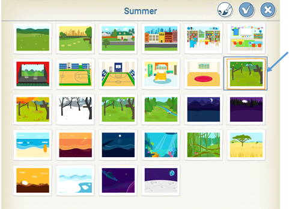
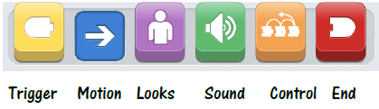
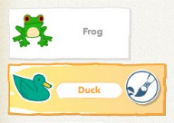
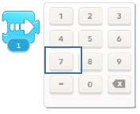
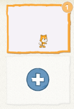

The following packet provides resources and suggestions for hosting your own ScratchJr Family Day event.
The DevTech Research Group at Tufts University, co-creator of ScratchJr, is conducting a study about how families learn programming together. We would like to invite you to participate in the research portion of ScratchJr Family Days, though it is not mandatory for running a ScratchJr family event. Should you wish to participate, follow the guidelines in "Section 3: Voluntary Research Participation". We appreciate your feedback!
ScratchJr Family Day is a community event where parents, grandparents, siblings, extended family members, and children can work together to create projects in ScratchJr! The goal of Family Day is not only to help adults and children feel more comfortable using ScratchJr, but also to encourage collaboration between adults and children while creating ScratchJr projects.
Guidelines for Family Recruitment
Now that you are planning to host a ScratchJr Family Day in your community, we'd like to provide a few recommendations for recruiting families to attend. We advise facilitators to recruit family participants from their respective community to come for a family coding event, through social media posts, email, or flyers. Recruiting materials should have the following points of information about the event:
- Date, time, and location of event
- Description of the ScratchJr programming app: "A free tablet app, developed by the DevTech Research Group at Tufts University and the Lifelong Kindergarten Group at MIT, that allows young children to program their own interactive stories and games, teaching problem solving, coding, creativity, collaboration, and more."
- An event tagline such as: "Families can collaborate to learn programming and new technologies together! Join [name of institution] for a family coding event with the ScratchJr programming app on [date] at [time]."
- Indication that this event is for children ages 5-7 (or in kindergarten through second grade) and their families - can include siblings, parents, grandparents, etc.
- Attendees have the option to provide feedback about the event structure and content for DevTech Research Group team at Tufts University, who is conducting a study on the facilitation of family collaboration around programming and technology. Participation in the study is not mandatory to attend the Family Day event.
- Instructions for bringing tablets, or note that institution will provide tablets to borrow, depending on capability of institution.
- Instructions for signing up to RSVP for event (i.e. Google form, email address, sign up sheet)
Facilitator Script
Once families have arrived at your event, we ask that you state the following facilitator script for study recruitment, emphasizing that participation in the research part of the event is voluntary:
"Hello everyone, and welcome to our ScratchJr Family Day programming event! We're so happy you're all joining us today to learn more about technology and programming collaborative with ScratchJr. ScratchJr is a programming app for young children, developed by the DevTech Research Group at Tufts University, and the Lifelong Kindergarten Group at MIT. We are hosting this family outreach coding event by the DevTech group at Tufts, so they can better understand how families learn about programming and technologies together. If you would like to be participants in this study run by DevTech, we will provide you with 2 short surveys: one at the beginning, and one at the end of this event, as a chance for you to give their team feedback on your experience coding with the app as a family. Should you choose not to participate in the study, that is okay, and we will not provide you with the surveys. The pre-event survey will take approximately 5 minutes, and the post-event survey will take approximately 10-15 minutes to complete before you leave here today, if your family chooses to participate and provide the creators of ScratchJr with feedback about this event. Additionally, one of our facilitators will be going around taking photographs. These may be used for promotional and/or educational purposes. If you would not like to be photographed, please let me know now."
Photographs
If families to not wish to be photographed, they should tell you (or other designated facilitator) at the beginning of the event. We recommend giving those family members a sticker or some sort of signifier that they do not wish to be photographed. Therefore, facilitators should know which attendees do not wish to be photographed, and should be sure to not include them in photos. After the event, study coordinators will share you on a file storage drive so you can upload all other photographs from the event of consenting participants.
Surveys
Information about the event and opportunity to consent to participation are all included in the survey links below. Once a legal guardian or facilitator reads through the information in the pre-survey and selects "Yes" to consent to participating, they will take the survey. If they select "No" at this point, they will be taken to the end of the survey. Please note: if families DO wish to participate, we ask that they complete both the pre-event survey AND the post-event survey to get a complete look at their experiences.
- Family Pre-Event Survey through Qualtrics: http://bit.ly/SJFamilyPreSurvey - We ask that at least 1 legal guardian of the children attending fill out this pre-survey when they arrive at the event on their device on behalf of the family, if they choose to participate. Participation in this study is completely voluntary. Families are welcome to attend the event and not participate.
- Family Post-Event Survey through Qualtrics: http://bit.ly/SJFamilyPostSurvey - We ask that the same llegal guardian(s) of the children attending who filled out the pre-event survey fill out this survey at the end of the event on their device on behalf of the family. We ask that all families who filled out pre-surveys also fill out the post-survey for best reserach results.
- Facilitator Post-Event Survey through Qualtrics: http://bit.ly/SJFacilitatorPostSurvey - We ask that at least 1 facilitator at our event completes this survey within 48 hours of the end of the event. Ideally, we would like all facilitators to participate for more feedback, but we only require 1.
- 1 Device per family with ScratchJr downloaded (see www.scratchjr.org for a list of supported devices)
- Sign-in sheet
- Name tags
- Handout: ScratchJr Tip Sheet
- Handout: Family Coding Activity Prompts
- Handout: Suggested Questions
- Off-screen activities (optional - see Section 6 "Sample Agenda" for ideas)
- Index Cards (optional, for “Family Share Time”)
- Paper and Markers (optional, for off-screen project planning)
- Projector (optional, for group share of family projects at the end of the event)
This event can be run with any number of families. We recommend each event have at least 3 facilitators, and that they be familiar with ScratchJr and comfortable teaching others how to use it. Generally, one device is advised per family. However, if there are multiple children within the ScratchJr age range (5-7), it may be worthwhile to have a second device available. Remember, the goal is to make sure that adults are able to work with their children (rather than having children working on their own).
Below are sample agendas for 3 differently timed ScratchJr Family Day events: 2 hours, 1.5 hours, and 1 hour. You may adapt the protocol to accommodate your timing needs. Activities will be described in more detail in the next section.
2-Hour Event
- 15 minutes: Arrival, Check-In, & Research Participation. Families check-in using your sign-in sheet, check-out devices to parents if needed (one device per family, families have option to bring their own device or borrow). Depending on your resources, families can either bring their own device or the facilitators can provide them, or a combination of the two. After check-in, 1 facilitator should read the research script (Section 3) and allow a few minutes for families to complete pre-surveys.
- 30 minutes: Introductions to ScratchJr. We recommend splitting up adults and children for a ScratchJr introduction session. 1 facilitator can take the children to one room (or ond side of the room) and the other can take the adults to explain how ScratchJr works and answer any questions the groups have. (1) Children Introduction: welcome game, what is programming introduction, ScratchJr interface introduction (TIP: try printing large versions of ScratchJr blocks for off-screen programming games like Simon Says or matching: http://scratchjr.org/teach/curricula (2) Adults Introduction: welcome, hands-on introduction (with devices), hand out and go over the “ScratchJr Tip Sheet” handout (Section 10), introduce schedule for event, have open discussion/Q&A about programming and technology in early childhood.
- 20 minutes: Family Coding. Family members work together to create one project in ScratchJr using the “Family Coding Activity Prompts” handout (Section 10) as inspiration.
- 10 minutes: Family Swap & Share Time. Families pair up to share what they have created so far; families give each other feedback on their project using the “Suggested Questions” handout (Section 10)
- 15 minutes: Family Coding (Continued). Parents and children collaborate as a group to add on to their projects and incorporate suggestions from the Family Swap & Share Time
- 20 minutes: Group Share. Families can share their completed projects with the whole group
- 10 minutes: Clean Up & Post-Event Surveys.Families clean up materials, and take about 5 minutes to fill out the post-event survey on their device if they particiapted in the pre-event survey. Families then return devices if they borrowed them.
1.5-Hour Event
- 10 minutes: Arrival, Check-In, & Research Participation. Families check-in using your sign-in sheet, check-out devices to parents if needed (one device per family, families have option to bring their own device or borrow). Depending on your resources, families can either bring their own device or the facilitators can provide them, or a combination of the two. After check-in, 1 facilitator should read the research script (Section 3) and allow a few minutes for families to complete pre-surveys.
- 20 minutes: Introductions to ScratchJr. We recommend splitting up adults and children for a ScratchJr introduction session. 1 facilitator can take the children to one room (or ond side of the room) and the other can take the adults to explain how ScratchJr works and answer any questions the groups have. (1) Children Introduction: welcome game, what is programming introduction, ScratchJr interface introduction (TIP: try printing large versions of ScratchJr blocks for off-screen programming games like Simon Says or matching: http://scratchjr.org/teach/curricula (2) Adults Introduction: welcome, hands-on introduction (with devices), hand out and go over the “ScratchJr Tip Sheet” handout (Section 10), introduce schedule for event, have open discussion/Q&A about programming and technology in early childhood.
- 20 minutes: Family Coding. Family members work together to create one project in ScratchJr using the “Family Coding Activity Prompts” handout (Section 10) as inspiration.
- 5 minutes: Family Swap & Share Time. Families pair up to share what they have created so far; families give each other feedback on their project using the “Suggested Questions” handout (Section 10).
- 10 minutes: Family Coding (Continued). Parents and children collaborate as a group to add on to their projects and incorporate suggestions from the Family Swap & Share Time.
- 15 minutes: Group Share. Families can share their completed projects with the whole group.
- 10 minutes: Clean Up & Post-Event Surveys Families clean up materials, and take about 5 minutes to fill out the post-event survey on their device if they particiapted in the pre-event survey. Families then return devices if they borrowed them.
1-Hour Event
- 5 minutes: Arrival, Check-In, & Research Participation. Families check-in using your sign-in sheet, check-out devices to parents if needed (one device per family, families have option to bring their own device or borrow). Depending on your resources, families can either bring their own device or the facilitators can provide them, or a combination of the two. After check-in, 1 facilitator should read the research script (Section 3) and allow a few minutes for families to complete pre-surveys.
- 15 minutes: Introductions to ScratchJr. We recommend splitting up adults and children for a ScratchJr introduction session. 1 facilitator can take the children to one room (or ond side of the room) and the other can take the adults to explain how ScratchJr works and answer any questions the groups have. (1) Children Introduction: welcome game, what is programming introduction, ScratchJr interface introduction (TIP: try printing large versions of ScratchJr blocks for off-screen programming games like Simon Says or matching: http://scratchjr.org/teach/curricula (2) Adults Introduction: welcome, hands-on introduction (with devices), hand out and go over the “ScratchJr Tip Sheet” handout (Section 10), introduce schedule for event, have open discussion/Q&A about programming and technology in early childhood.
- 20 minutes: Family Coding. Family members work together to create one project in ScratchJr using the “Family Coding Activity Prompts” handout (Section 10) as inspiration.
- 10 minutes: Group Share. Families can share their completed projects with the whole group.
- 10 minutes: Clean Up & Post-Event Surveys Families clean up materials, and take about 5 minutes to fill out the post-event survey on their device if they particiapted in the pre-event survey. Families then return devices if they borrowed them.
Here are three activity ideas for families to get started on their own ScratchJr projects during the “Family Coding” portion of the event. Remember, throughout the event, families should be encouraged to create only one project together (rather than multiple projects). These activity prompts are meant to inspire families, but do encourage families to go “outside the box” instead of being confined by the prompts. You, as the event host, are also encouraged to create your own activities that may be more relevant to your own community. These activities are also included in "Section 10: Handouts" of the packet so they can be printed out and displayed for families to see.
- Fairy Tale: Create a fairy tale, starring your family members! Who will be the villain, and who will save the day? It may be helpful to add new pages to create your story!
- Family Race: Who runs the fastest in your family? Can you create a race between two members of your family in ScratchJr? The “Speed” block may be helpful for this challenge!
- Family Vacation: Where is your favorite place to visit as a family? Is it the park, a chocolate factory, the beach, or a vacation that you went on? Tell a story using ScratchJr to share about this favorite place.
- The schedule was designed so that there is a separate, facilitated introduction to ScratchJr for adults and for children. This was specifically done because adults and children need different scaffolds to get started and feel comfortable. In the adult session, it is helpful to have a hands-on introduction where parents can follow along in ScratchJr on their own devices. Additionally, providing any tips for how to use ScratchJr or ways to encourage collaboration between adults and children could be helpful. In the child session, it is helpful to start with a warm-up game so that children can get to know the facilitators as well as the other children. Additionally, introducing and explaining the word “programming,” as well as the types of projects that they can create in ScratchJr will help them get acclimated.
- During the adult introduction as well as throughout the event, remind adults that this event is designed for adults and children to work collaboratively in ScratchJr!
- If desired, provide alterative, off-screen activities for siblings who may not be as engaged in ScratchJr. Ideas for activities include ScratchJr coloring pages (see Section 10), picture books, and drawing/craft materials.
- Family Share Time: During the “Family Share Time,” an easy way to pair up families is to hand out index cards with one color on them. Have families find their matching color, and that is their partner.
- Room Set-Up: Have ample spaces set up for families to work together. This can be at a table, on the floor/rug, or wherever else they may feel the most comfortable. It is important for there to places where families can work by themselves as well as in pairs.
- If desired, you can have paper and markers available to families if they want to plan their ScratchJr projects off-screen first.
- Foster a learning environment of asking questions rather than always providing answers.
- Encourage exploration, experimentation, and risk-taking! Encourage participants to move out of their comfort zones to try new concepts.
- Remind families that this event is not about producing a final product; instead, it is about sharing the joy of programming and having a fun experience as a family!
Congratulations on a successful ScratchJr Family Day! Be sure to fill out your Facilitator Survey (http://bit.ly/SJFacilitatorPostSurvey) within 48 hours of your event so we can receive your feedback. If you have photos from consenting participants from your event, email devtech@tufts.edu and we will provide you access to a secure folder for upload.
After running your event, make sure to share with your community about how it went. Use the hashtag #ScratchJrFamily to share on Twitter and Facebook about your event! Don't forget to tag us @ScratchJr and @TuftsDevTech - we can't wait to hear about it!
Handouts begin below, and will print as separate sheets when you print this packet. They include:
- Tip Sheet: handout to help parents get started in ScratchJr; print this sheet out double-sided and hand it out during the parent introduction
- Family Coding Activity Prompts: to be printed out and distributed at each table, so families have ideas for projects to create in ScratchJr
- Suggested Questions: to be used during “Family Share Time” to help facilitate conversation between families (the document is set up so that one page has questions for 3 families)
You can also print ScratchJr Coloring Sheets. These coloring sheets can be printed out and used as an additional off-screen activity
ScratchJr Tip Sheet
Add/Edit a Character

Delete a Character
Add/Edit a Background

Block Categories

How to Create a Program
Remember, you can give every character a program if you’d like. To go between characters, simply tap on the character you would like to program on the left side of the screen and make sure it is highlighted in orange. Then, add the desired programming blocks.

How to Change the Numbers

How to Add a Page (and Go To Next Page)

Family Coding Activity Prompts
Directions: Print out the following prompts and display them for families to see throughout the event. These prompts are for the “Family Coding” portion of the event where families are creating their own ScratchJr projects.
Fairy Tale
Family Race
Family Vacation
Suggested Questions
Directions: Below is a list of questions that families can ask one another during “Family Share Time.” Each family should have one set of questions (the document is set up so that one page has questions for 3 families).
Suggested Questions:
- What did you make for your project?
- What programming blocks did you use to make your project?
- What would you still want to add to your project with more time?
- Do you have any ideas on how we could improve our project?
Suggested Questions:
- What did you make for your project?
- What programming blocks did you use to make your project?
- What would you still want to add to your project with more time?
- Do you have any ideas on how we could improve our project?
Suggested Questions:
- What did you make for your project?
- What programming blocks did you use to make your project?
- What would you still want to add to your project with more time?
- Do you have any ideas on how we could improve our project?